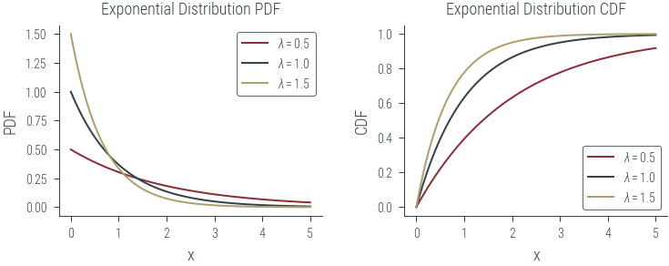
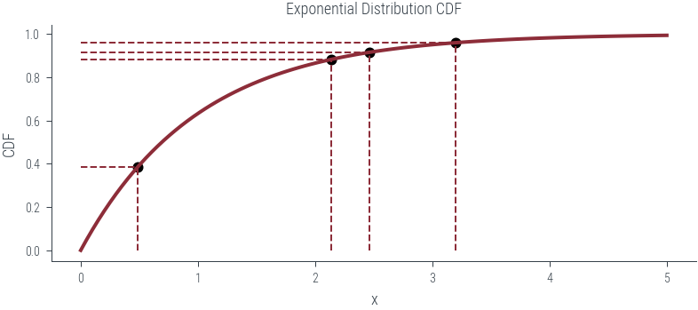
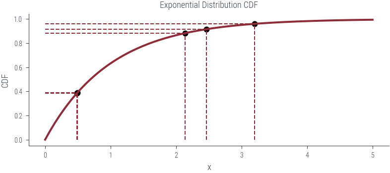
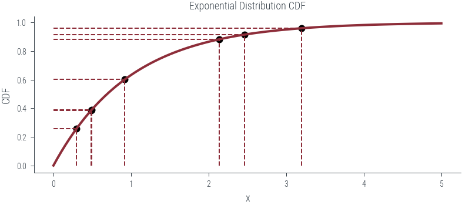

import torch
import numpy as np
import matplotlib.pyplot as plt
import pandas as pd
import matplotlib.pyplot as plt
import seaborn as sns
import arviz as az
%matplotlib inline
# Retina display
%config InlineBackend.figure_format = 'retina'
import warnings
warnings.filterwarnings('ignore')from tueplots import bundles
plt.rcParams.update(bundles.beamer_moml())
# Also add despine to the bundle using rcParams
plt.rcParams['axes.spines.right'] = False
plt.rcParams['axes.spines.top'] = False
# Increase font size to match Beamer template
plt.rcParams['font.size'] = 16
# Make background transparent
plt.rcParams['figure.facecolor'] = 'none'# Define values of lambda
lambdas = [0.5, 1.0, 1.5]
x = torch.linspace(0, 5, 100)
# Create a figure with two subplots
fig, (ax1, ax2) = plt.subplots(1, 2,)
# Plot PDFs in the first subplot
for lam in lambdas:
exponential_dist = torch.distributions.Exponential(rate=lam)
pdf = exponential_dist.log_prob(x).exp()
ax1.plot(x, pdf, label=f'$\lambda = {lam}$')
ax1.set_xlabel('x')
ax1.set_ylabel('PDF')
ax1.set_title('Exponential Distribution PDF')
ax1.legend()
# Plot CDFs in the second subplot
for lam in lambdas:
exponential_dist = torch.distributions.Exponential(rate=lam)
cdf = exponential_dist.cdf(x)
ax2.plot(x, cdf, label=f'$\lambda = {lam}$')
ax2.set_xlabel('x')
ax2.set_ylabel('CDF')
ax2.set_title('Exponential Distribution CDF')
ax2.legend()
# Show the plots
plt.tight_layout()
plt.savefig("../figures/sampling/exp-cdf.pdf")
import torch
import matplotlib.pyplot as plt
from matplotlib.animation import FuncAnimation
import numpy as np
# Create the exponential distribution
def plot_n_samples(n):
exponential_dist = torch.distributions.Exponential(rate=1)
x = torch.linspace(0, 5, 100)
# Create the CDF plot
fig, ax = plt.subplots()
ax.set_xlabel('x')
ax.set_ylabel('CDF')
ax.set_title('Exponential Distribution CDF')
# Initialize an empty line for the animated point
point, = ax.plot([], [], 'ko', ms=5)
# Draw the CDF curve
cdf = exponential_dist.cdf(x)
ax.plot(x, cdf, label='CDF', lw=2)
torch.manual_seed(42)
u = torch.rand(n)
# Calculate the corresponding point on the CDF
point_x = exponential_dist.icdf(u)
point_y = u
# Add the point to the plot
point.set_data(point_x, point_y)
# Add vertical and horizontal dashed lines
ax.vlines(point_x, 0, point_y, linestyle='--', lw=1)
ax.hlines(point_y, 0, point_x, linestyle='--', lw=1)
plt.savefig(f"../figures/sampling/exp-cdf-samples-{n}.pdf")
for i in range(1, 10):
plot_n_samples(i)



# Compare KDE to the true PDF
expon = torch.distributions.Exponential(rate=1)
x = torch.linspace(0, 5, 100)
pdf = expon.log_prob(x).exp()
# Sample from the distribution
torch.manual_seed(42)
random_numbers = expon.sample((10000,))
az.plot_kde(np.array(random_numbers), rug=False, label='KDE from Torch')
plt.plot(x, pdf, label='True PDF', color='C1')
plt.legend()
# Samples using inverse CDF method
u = torch.rand(10000)
samples = expon.icdf(u)
az.plot_kde(np.array(samples), rug=False, label='KDE using inverse CDF', plot_kwargs={"color":'C2', "ls":"--"})
plt.xlim(0, 5)(0.0, 5.0)# Similarly generating samples from a normal distribution
normal = torch.distributions.Normal(loc=0, scale=1)
x = torch.linspace(-5, 5, 100)
pdf = normal.log_prob(x).exp()
cdf = normal.cdf(x)
plt.plot(x, pdf, label='PDF')
plt.plot(x, cdf, label='CDF')
plt.legend()<matplotlib.legend.Legend at 0x7f3eaa3452b0>u = torch.rand(10000)
samples = normal.icdf(u)
az.plot_kde(np.array(samples), rug=False, label='KDE using inverse CDF', plot_kwargs={"color":'C2', "ls":"--"})
plt.plot(x, pdf, label='True PDF', color='C1')
plt.xlim(-5, 5)
plt.legend()<matplotlib.legend.Legend at 0x7f3eaa2b6040>def inverse_cdf(u, lam):
return -torch.log(1 - u) / lam
def sample_exponential(n_samples, lam):
u = torch.rand(n_samples)
return inverse_cdf(u, lam)class SimplePRNG:
def __init__(self, seed=0):
self.seed = seed
self.a = 1664525
self.c = 1013904223
self.m = 2**32
def random(self):
self.seed = (self.a * self.seed + self.c) % self.m
return self.seed / self.m
def generate_N_random_numbers(self, N):
random_numbers = []
for _ in range(N):
random_numbers.append(self.random())
return random_numbers
# Usage
prng = SimplePRNG(seed=42) # You can change the seed value
N = 10000 # Change N to the number of random numbers you want to generate
random_numbers = prng.generate_N_random_numbers(N)
_ = plt.hist(random_numbers, bins=10)
az.plot_kde(np.array(random_numbers), rug=False)<AxesSubplot:>_ = plt.hist(np.random.rand(10000), bins=10)az.plot_kde(np.random.rand(10000), rug=False)<AxesSubplot:>### Uniform (a, b)
a = -2
b = 2
random_numbers_a_b = a + (b - a) * np.array(random_numbers)plt.hist(random_numbers_a_b, bins=10)(array([1006., 1012., 963., 964., 1008., 939., 1039., 1012., 1031.,
1026.]),
array([-1.99864224e+00, -1.59883546e+00, -1.19902869e+00, -7.99221917e-01,
-3.99415144e-01, 3.91628593e-04, 4.00198402e-01, 8.00005174e-01,
1.19981195e+00, 1.59961872e+00, 1.99942549e+00]),
<BarContainer object of 10 artists>)